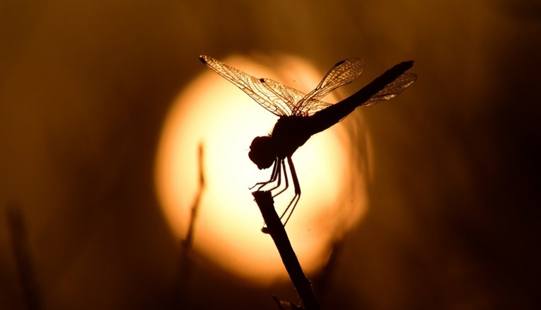

Kukci polako izumiru, posljedice će biti teške za cijeli svijet

Kukci su važan dio ekosustava i njihov nestanak će imati katastrofalne posljedice. Čak 74% svih poljoprivrednih kultura ovisi o oprašivanju, a kukci čine više od polovice svih oprašivača.
Znanstvenici su upozoravali da kukci polako izumiru, a to se događa zbog uništavanja staništa, zagađenja, korištenja pesticida te klimatskih promjena. To će dovesti do smanjivanja broja oprašivača, što će dovesti do smanjenja prinosa i povećanja cijena hrane.
Kukci su također važni za ravnotežu u ekosustavu jer su hrana za mnoge životinje, uključujući ptice, miševe i guštere. Nestanak kukaca će dovesti do nestanka životinja koje ih jedu, što će dovesti do još većeg neravnoteže u ekosustavu.
Zato je važno poduzeti mjere kako bi se spriječilo njihovo izumiranje i zaštitilo ekosustave. To uključuje održavanje različitih vrsta biljaka, smanjivanje korištenja pesticida i zaštitu staništa.
Izvor: Index.hr